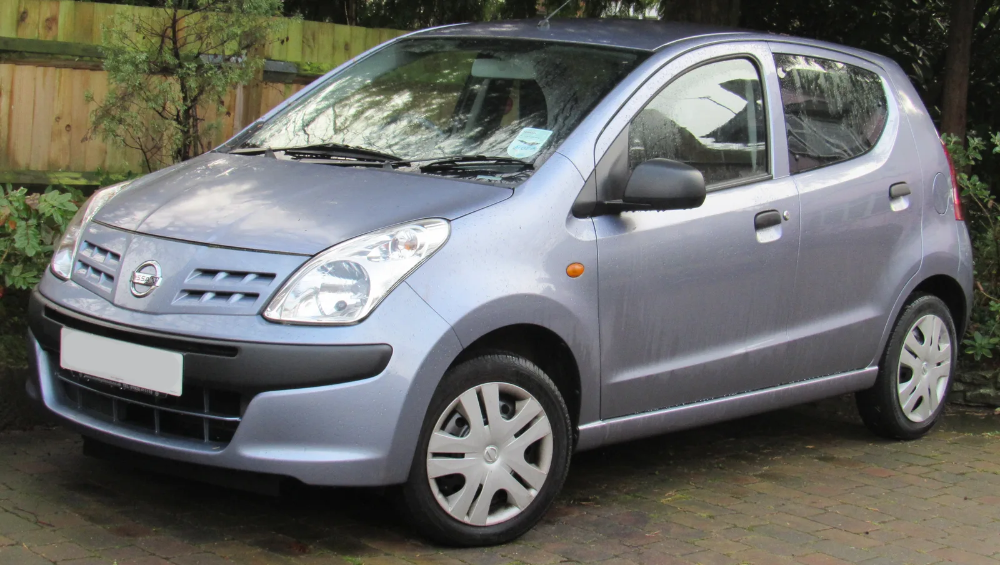
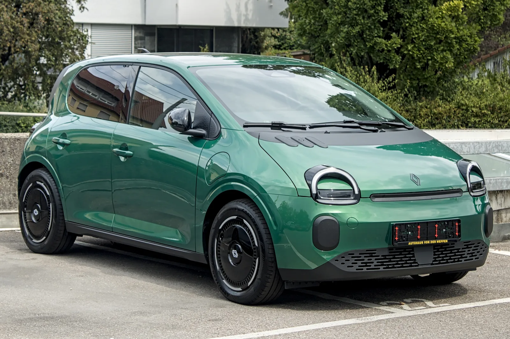
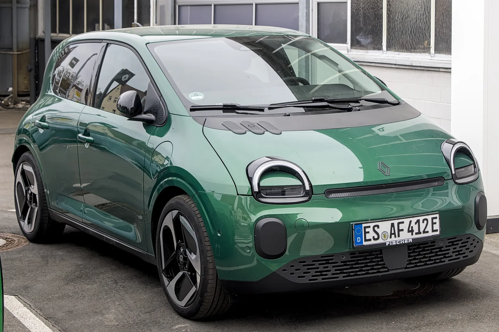
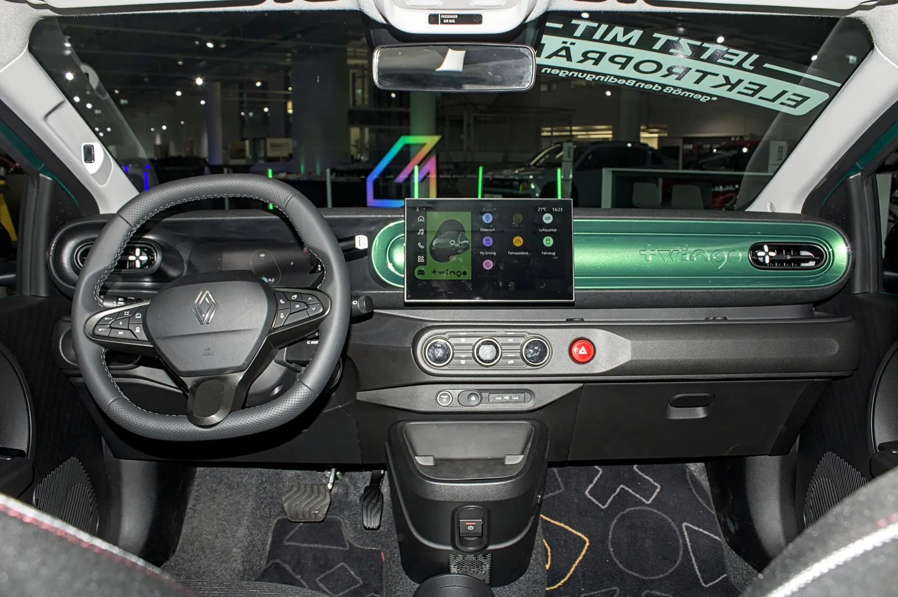

▲ 2009~2013년 유럽에서 판매됐던 초대 닛산 픽소. 스즈키 알토를 기반으로 한 OEM 모델이었다 ⓒ Vauxford, Wikimedia Commons (CC BY-SA 4.0)
"작지만 개성은 확실하다." 닛산이 2013년 단종 이후 13년간 잠들어 있던 이름 '픽소(Pixo)'를 다시 꺼내 들었다. 지피코리아에 따르면 닛산은 오는 9월 23일 유럽 시장을 겨냥한 초소형 순수전기차 '올뉴 픽소'를 세계 최초로 공개한다. 크기는 작지만 개성이 강한 도심형 A세그먼트 모델로, 르노그룹과의 협력 강화를 상징하는 첫 결과물이기도 하다.
1. 13년 만의 귀환 — 픽소는 원래 어떤 차였나
초대 픽소는 2009년부터 2013년까지 유럽에서 판매된 닛산의 최하위 라인업이었다. 당시 닛산 마이크라보다 저렴한 초소형차가 필요했던 닛산은 자체 개발 대신 스즈키의 경차 '알토'를 들여와 배지만 바꿔 다는 방식을 택했다. 인도 마루티에서 생산돼 유럽으로 수출된 이 모델은 한때 영국에서 6,995파운드라는 파격적인 가격으로 '영국에서 가장 싼 신차'라는 타이틀을 갖기도 했다. 그러나 990cc 3기통 가솔린 엔진과 기본기에 충실한 구성으로 큰 반향을 일으키지는 못한 채 2013년 조용히 단종됐다.
13년이 지난 지금, 닛산이 다시 픽소라는 이름을 꺼낸 배경에는 2025년 3월 발표된 르노-닛산 얼라이언스 재편이 있다. 당시 양사는 르노가 신형 트윙고 E-테크의 파생 모델을 개발해 2026년부터 닛산에 공급하기로 합의했다. 이번 픽소는 바로 그 합의의 첫 결과물로, 닛산이 자체 개발 없이도 유럽 A세그먼트 전동화 라인업을 빠르게 채울 수 있는 전략적 선택인 셈이다.
2. 디자인 — 마이크라의 얼굴, 트윙고의 몸집

▲ 픽소가 아니라 베이스 모델인 르노 트윙고 E-테크다. 신형 픽소는 이 차체와 실루엣을 공유하되 닛산 고유의 전면부 디자인을 입을 예정이다 ⓒ Alexander Migl, Wikimedia Commons (CC BY-SA 4.0)
닛산이 공개한 티저 이미지와 외신 보도를 종합하면, 신형 픽소는 신형 마이크라 EV에서 쓰인 둥근 헤드램프와 심플한 프론트엔드 디자인 언어를 축소 적용할 것으로 보인다. 차체 실루엣과 도어, 유리 라인 등 기본 골격은 트윙고 E-테크와 동일하되, 그릴 형상과 램프 그래픽, 범퍼 디테일에서 차별화를 준다는 것이 외신들의 공통된 분석이다. 스페인 매체 Motor.es는 실제 도로에서 위장막을 두른 테스트카를 포착하기도 했는데, 전조등 위치와 크기가 트윙고와 다르다는 점이 확인됐다.
정식 공개는 9월 23일로 예정돼 있으며, 그전까지는 실루엣 위주의 티저 이미지만 순차적으로 풀릴 전망이다.
3. 파워트레인·배터리 — 트윙고와 무엇을 공유하나

▲ 트윙고 E-테크는 AmpR Small(구 CMF-B EV) 플랫폼에 27.5kWh LFP 배터리를 얹어 WLTP 기준 최대 263km를 주행한다. 픽소도 같은 구성을 물려받을 가능성이 크다 ⓒ Alexander Migl, Wikimedia Commons (CC BY-SA 4.0)
픽소의 공식 파워트레인 스펙은 아직 공개되지 않았지만, 베이스 모델인 트윙고 E-테크의 구성을 그대로 물려받을 가능성이 유력하다. 트윙고는 르노-닛산 얼라이언스의 소형 전기차 전용 플랫폼 'AmpR Small'을 기반으로, 27.5kWh LFP 배터리와 60kW(82마력)급 단일 모터를 탑재해 WLTP 기준 최대 263km를 주행한다. 완속 및 급속 충전 성능도 도심 주행에 초점을 맞춘 수준으로 알려져 있다.
생산은 슬로베니아 노보 메스토에 위치한 르노그룹 레보즈(Revoz) 공장에서 이뤄진다. 같은 공장에서는 트윙고 E-테크는 물론, 최근 공개된 2세대 다치아 스프링도 함께 생산되고 있어 사실상 르노 얼라이언스의 유럽향 A세그먼트 전기차 생산 거점 역할을 하고 있다. 가격은 공식 발표 전이지만, 외신들은 보조금 적용 전 기준 2만유로(약 3,100만원) 안팎에서 형성될 것으로 내다보고 있으며, 판매는 2027년 상반기부터 시작될 전망이다.
4. 실내와 상품성 — 비용을 낮춘 플랫폼 공유 전략

▲ 트윙고 E-테크의 실내. 센터 디스플레이와 계기판 구성 등 상당 부분이 픽소에도 그대로 이식될 것으로 보인다 ⓒ Alexander Migl, Wikimedia Commons (CC BY-SA 4.0)
초소형 저가 전기차인 만큼 픽소의 실내 역시 비용 효율을 최우선에 둔 구성이 될 가능성이 크다. 트윙고 E-테크는 센터페시아에 세로형 인포테인먼트 디스플레이와 디지털 계기판을 기본 적용하면서도, 수납공간과 물리 버튼을 적절히 배치해 실용성을 확보했다는 평가를 받는다. 닛산은 여기에 자사 인포테인먼트 UI와 브랜드 로고, 일부 트림 구성만 바꿔 픽소로 재해석할 것으로 보인다. 플랫폼과 부품을 공유하는 만큼 개발비를 절감하고, 그만큼 판매 가격을 낮추는 것이 이번 프로젝트의 핵심 목표이기도 하다.
5. 유럽 소형 전기차 시장 경쟁 구도
픽소가 뛰어드는 유럽 A세그먼트 전기차 시장은 이미 치열하다. 같은 플랫폼을 쓰는 친정 격인 르노 트윙고 E-테크는 물론, 슬로베니아 같은 공장에서 생산되는 2세대 다치아 스프링도 초저가 전기차 포지션을 노린다. 여기에 시트로엥은 e-C3를 앞세워 2만유로 초반대 가격으로 시장을 선점하고 있고, 피아트 판다 일렉트릭, 현대 인스터 등도 비슷한 체급에서 경쟁 중이다.
픽소의 강점은 닛산 브랜드가 가진 딜러망과 전기차 이미지(리프로 쌓은 EV 노하우)를 활용할 수 있다는 점이다. 반면 트윙고·스프링과 사실상 같은 차체·배터리를 쓰는 만큼, 결국 가격과 애프터서비스, 브랜드 신뢰도에서 승부가 갈릴 가능성이 크다. 유럽 시장조사기관들은 A세그먼트 전기차가 2027년까지 유럽 전기차 판매의 15% 이상을 차지할 것으로 전망하고 있어, 이 체급의 경쟁은 한동안 더 격화될 전망이다.
6. 국내 출시 가능성은?
국내 소비자 입장에서는 픽소의 한국 상륙 여부가 궁금할 수밖에 없다. 하지만 현재로선 가능성이 높지 않다는 것이 중론이다. 닛산은 판매 부진으로 2020년 한국 승용차 시장에서 철수했으며, 아직 재진출 계획을 공식화하지 않았다. 설령 재진출하더라도 초소형·저가 세그먼트인 픽소보다는 수익성이 높은 SUV나 리프 같은 볼륨 모델을 먼저 투입할 가능성이 크다. 국내 경차·소형 전기차 시장 역시 기아 레이 EV, 캐스퍼 일렉트릭 등 국산 모델이 보조금 혜택까지 두텁게 받으며 이미 자리를 잡고 있어, 수입 초소형 전기차가 끼어들 틈이 넓지 않다는 분석도 있다.
다만 유럽에서의 초기 반응이 좋다면 동남아·중남미 등 다른 신흥시장으로 판매망이 확장될 가능성은 열려 있다. 픽소의 정식 공개와 상세 스펙은 지피코리아 원문 기사에서도 확인할 수 있다. 지피코리아 원문 기사 바로가기
닛산 유럽 공식 뉴스룸에서도 픽소 공개 소식과 관련 티저 영상을 순차적으로 업데이트하고 있다. 닛산 유럽 뉴스룸에서 확인 가능